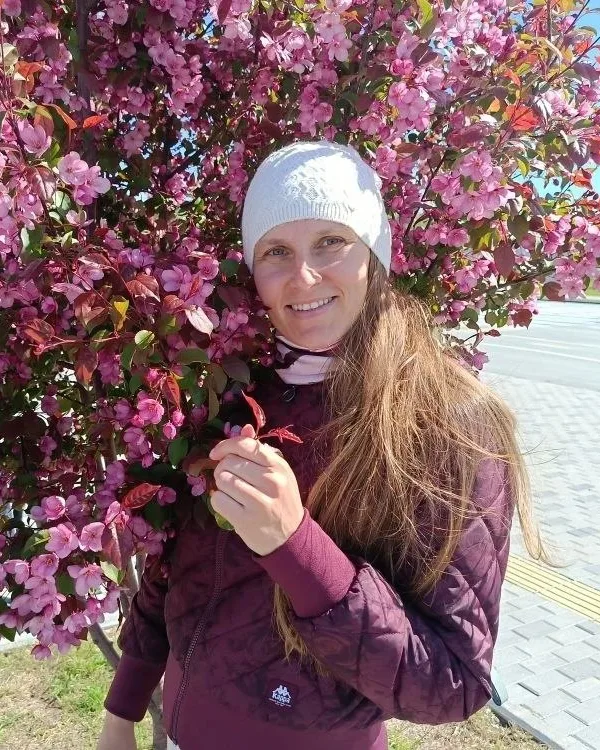

Собрано слов: 0 из 0Нажми на букву, она скажет слово
Нажми на букву, она скажет слово по‑английски

Обо мне
Меня зовут Ольга, я преподаватель английского и немецкого языков. Учу больше 8 лет, занимаюсь с детьми разных возрастов и со взрослыми.
Моя специальность: английский с нуля до уровня Intermediate за короткий срок. Помогаю детям освоиться на уроках английского в школе и учу заниматься дальше самостоятельно.
К каждому ученику подхожу индивидуально и подстраиваю программу под него.
Образование
Профильное педагогическое, преподаватель английского и немецкого языков
Опыт
Больше 8 лет
Ученики
Дети с дошкольного возраста и взрослые
8+1
Своя методика
«Восемь базовых моделей и один глагол»
По ней ученик начинает говорить по‑английски с нуля. Учу через общение, поэтому говорим с первых занятий, а не только слушаем и пишем. Методику я проверила на 24 учениках.
Как проходят занятия
Пробное занятие
Знакомимся, смотрю, что ученик уже знает и как ему легче учиться.
Первый месяц
За месяц видна динамика. После него говорю, что подтягиваем и сколько это займёт.
Постоянное расписание
2 или 3 раза в неделю по 60 или 90 минут, в кабинете или онлайн. Дни и время закрепляем за учеником.
Стоимость
Одна цена для детей и взрослых. Лучше всего заниматься 2 или 3 раза в неделю.
Работаю как ИП: можно оплатить от юрлица, заключаю договор и даю акты выполненных работ.
Ольга занималась с нашей дочерью английским. Умеет заинтересовать ребёнка, использует разные техники запоминания, имеет много интересных карточек и другие интерактивные материалы для детей. Дочка легко запомнила новые слова. Мы довольны. Рекомендую.
Александр З.март 2026
Ребёнок в школе перешёл в продвинутую группу английского и сразу же стал отставать. Решили попробовать дополнительные занятия, Ольгу выбрали по отзывам и локации. Почти год занятий, и школьная программа теперь по зубам. В какой-то момент Ольга говорит, цель достигнута, можно заниматься дальше, но следует поставить новую цель. Действительно, в школе оценки сплошные 4 и 5. Это уважительное отношение и к ученикам, и к себе как профессионалу. Итого: пять звёзд, но поставил бы все семь.
Yuri K.февраль 2022
Ольга Теплова прекрасный специалист, занималась онлайн английским с моей дочкой. Теперь рекомендую Ольгу всем знакомым. Понятно объясняет столько раз, сколько нужно ребенку для усвоения материала. Успехов и процветания, Ольга, в Вашем благородном деле!🌷
Евгения К.февраль 2023
Все уроки проходили на высшем уровне и позитивной обстановке. После пары занятий чувствуется результат. Дети с большим интересом изучают язык! Олечка очень терпелива, доброжелательна, готово помочь своему ученику всеми возможными способами. Мы планируем в этом году продолжить занятия. Успехов Вам!!!
Альбина С.июль 2022
Английский понадобился на работе, и тогда я понял что мои школьные знания не позволяют мне даже поддержать элементарный диалог. Также не понимал как строить предложения, хотя знал много английских слов. Долго не решался начать изучать, думал что это будет сложно и не интересно. Первое занятие у Ольги прошёл 3 марта, занимаюсь 3 раза в неделю по настоящее время. За этот период освоил логику построения предложений в английском языке, научится правильно задавить и отвечать на вопросы. Могу понять англоязычного и поддержать разговор. Также у Ольги замечательный учебный материал, по которому интересно учиться. Выражаю благодарность Ольге, продолжу занятия у неё.
Артем К.июль 2022
Занималась с Ольгой английским около года с нуля. Сдала экзамен на уровень Intermediate. Очень рада. Использовала английский, когда ездила в Китай и Тайланд по работе и в отпуск. Преподаватель отличный, все рекомендую!
Татьяна Ш.февраль 2021
Начала учить английский с нуля полгода назад и уже разговариваю свободно в настоящем времени!! Очень счастлива! Спокойно общаюсь с родственниками за границей. Хочу учить язык дальше! Ольга очень грамотный преподаватель, разговаривает 90% на английском, остальное дает понять с помощью наглядного материала, мимики, жестов, движений и рисунков. 100% результат адаптации к английскому через 2-5 занятий. Разговаривать начали уже с первого урока, используя международные слова. Мне все нравится! Рекомендую!
Ангелина М.декабрь 2020
У Ольги подход к преподаванию серьезный. Ещё, что важно, человек она неравнодушный. Рекомендую
Ирина Г.июнь 2023
Занимаюсь уже больше года с Ольгой по скайпу из Германии. Учу английский для работы. Занятия мне нравятся, и главное эффект есть! Сдала intermediate в июле👌Ольга, спасибо Вам за мой прорыв! Стартовали мы в прошлом году с elementary 🤗
Anna K.август 2020
Изучаю бизнес английский для работы. За год уровень с beginner поднялся до уверенного intermediate. Безумно рада результату! Термины в области экономики и управления использую ежедневно!
Софья К.июль 2021
Учила английский в школе, но сейчас для работы необходим английский в области экономики. Начали учить с Ольгой термины и параллельно работать над ошибками в произношении и грамматике. Сейчас спустя 6 месяцев чувствую себя уверенно при общении с поставщиками из Америки. Занятия максимально эффективные, рекомендую всем!
Марина Ф.январь 2021
Здравствуйте! Мне очень нравятся занятия с Ольгой, рекомендую всем! Английским я учу уже много лет, но заговорить всегда была большая проблема. После занятий по разговорной речи я перестала бояться говорить , пытаюсь говорить как могу, а не думать как же надо грамматически правильно сказать. Спасибо 😀
Olga T.июнь 2021
Ольга, спасибо Вам за занятия! Тяжело было найти своего преподавателя, чтобы все четко, структурированно и при этом разнообразно! Все вопросы разложила по полочкам и наконец все сдвинулось с мёртвой точки, все что путалось распуталось. Очень удобно, что есть удаленный формат через Zoom, боялась его, но в итоге в полном восторге! Рекомменд!
Елизавета П.ноябрь 2020
Учу английский для себя, хочу более уверенно разговаривать. С Ольгой начал заниматься около 3 недель назад. Я знал достаточно много слов, но разговаривать особо не получалось, ошибок было много. После уже 2-х занятий с Ольгой, почувствовал уверенность в себе и начал говорить. В общей сложности мы уже за 3 недели скорректировали ошибки в произношении, подтянули грамматику в прошедшем и перфектном временах. Язык для меня стал более понятным. Занятия продолжаем. Преподаватель отличный!
Вольдемар Г.ноябрь 2020
Я работаю Product Manager-ом. Основная информация, как и во всем ИТ, доступна на зарубежных сайтах. Ранее мне хватало уровня английского для чтения. Но сейчас переодически приходиться переписываться и участвовать в звонках. Пришлось экстренно подтягивать (что и делаю до сих пор). Удобно что можно заниматься дистанционно и в удобное для меня время. Не давно даже получилось сменить работу (в том числе потому что уровень английского поднялся) Рекомендую.
D G.ноябрь 2021
Ольга - это просто лучшее решение в моей жизни, не побоюсь этих слов. Дело в том, что Ольга привила мне большую любовь к английскому языку! У неё всегда были инновационные способы обучения.(например, для малышей - это игровые формы обучения; для взрослых построенное на ассоциациях) Она прекрасно понимает, что когда мы начинаем учить язык, то очень многое не понятно и не получается, но она поддержит, разберёт и объяснит все абсолютно доходчиво!
Axinya U.декабрь 2020
Очень давно хотели начать учить английский и вот в марте мы с сестрой пришли к Ольге ! 😍 Очень интересно и современно выстроены занятия , изучение даётся легко , домашки немного , в общем все как мы и хотели 😍 Ольга - очень приятная , добрая и милая девушка, с которой сразу нашли общий язык , а это очень важно и для преподавателя и для ученика ❤️
Катя Т.июнь 2021
Ольга, спасибо огромное! На уроках всегда тёплая и дружелюбная обстановка, изучение языка происходит легко и радостно! Уже вижу результаты после месяца занятий! Всем рекомендую! Ольга прекрасный преподаватель!
Екатерина Д.август 2020
Ольга , спасибо Вам за уроки!!! Мне всегда сложно давались языки, а с Вами было всё как то легко и интересно ! И всё получалось ! Теперь могу даже разговаривать на английском !!! Ещё раз Спасибо 🙏 ❤️
Елена Б.август 2020
Доступно, с пользой, не дорого!!! Планирую продолжить занятия с Ольгой. За последние два месяца стала говорить и не бояться. Раньше могла только писать. Прогресс на лицо!))
Валерия Л.август 2020
Очень компетентный педагог со знанием своего дела, интересный подход, и просто приятный человек.
Александра М.август 2020
Хороший опытный преподаватель! Рядом с домом. Рекомендую.
V М.декабрь 2020
Репетитор очень хороший добрый позитивный, всегда объяснит что и когда! Я советую с ним позаниматься 👍✨😉
Илья С.апрель 2022
Очень легко и интересно заниматься. Желание изучать язык растёт после каждого занятия. Прогресс просто удивляет, недавно я говорил "лангуаге" сейчас понимаю некоторые фразы в песнях или видео на английском, причём не напрягая память, а с ходу, сам того не замечая. В общем рекомендую!
mr.BIGGIE L.ноябрь 2020
Записаться на пробное занятие
Напишите, кто будет учиться и что сейчас получается с английским. Отвечу и предложу время.
Кабинет: Новосибирск, ул. Немировича‑Данченко, 148/1, офис 318. Ежедневно с 10:00 до 20:00 по записи. Как пройти Или онлайн по Зуму из любого города.